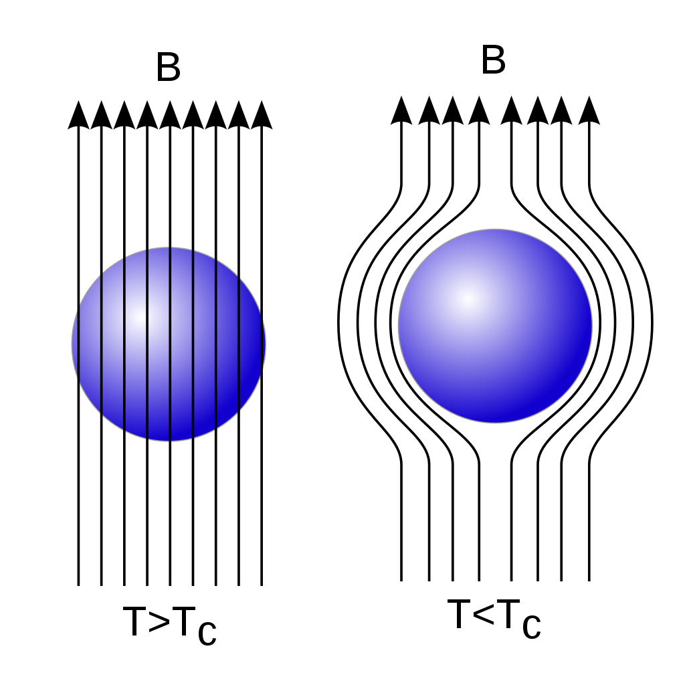

Y20 (2020) — English translation
In this problem we will consider mathematical similarities in describing two phenomena: added mass when a body moves in a liquid and a superconductor in a magnetic field. In hydrodynamics, to describe the movement of a fluid, such a characteristic is used as the circulation of the velocity vector, equal to $\Gamma=\displaystyle\oint_L\vec{v}\cdot\vec{dl}$, where $L$ is a certain closed loop. Circulation velocity serves as a measure of flow vorticity. Simple irrotational motion of an incompressible fluid without viscosity can be described by a circulation equal to zero: $\Gamma=0$. A superconductor is a material whose electrical resistance becomes zero when the temperature drops to a critical value. In 1933, the Meissner effect was discovered - the complete displacement of the magnetic field from the volume of a conductor during its transition to the superconducting state (see figure). The absence of a magnetic field in the volume of a conductor allows us to conclude from the general laws of the magnetic field that only a surface current exists in a superconductor. The magnetic field of the current destroys the external magnetic field inside the superconductor. In all further points of the problem, the fluid can be considered incompressible and without viscosity.

When a body moves, the liquid also begins to move and, therefore, has kinetic energy. During translational motion, this quantity does not depend on the speed of the body and is determined by the relation $E_k=\cfrac{(m+\mu)v^2}{2}$, where $E_k$ is the kinetic energy of the fluid and the body, $m$ is the mass of the moving body, $\vec{v}$ is the velocity vector of the body. In this part of the problem, we need to find the added mass of a ball of radius $R$ moving in a fluid having density $\rho$. Before the ball began to move, the liquid was also motionless. For universal notation, consider that $\vec{r}$ is a radius vector drawn from the center of the ball to an arbitrary point in space. Note: For this and the next part of the problem, you will need the results of Part A!
Note: For this and the next part of the problem, you will need the results of Part A!
In this part of the problem, we need to find the added mass for a cylinder of length $L$ and radius $R$, moving translationally in the direction perpendicular to its axis of symmetry. When calculating fluid velocities, neglect edge effects (assume that the cylinder is infinitely long). Also consider that the main contribution to the kinetic energy comes from the fluid moving between the ends of the cylinder. The speed of the cylinder is $\vec{v}$, the density of the liquid is $\rho$. For universality of notation, consider that $\vec{r}$ is a radius vector perpendicular to the cylinder axis, drawn from it to an arbitrary point in space.
Source: https://pho.rs/p/30